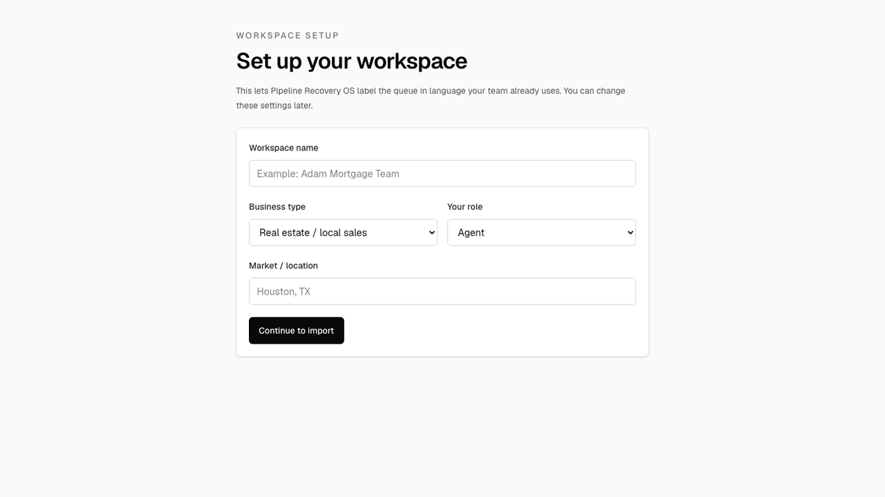
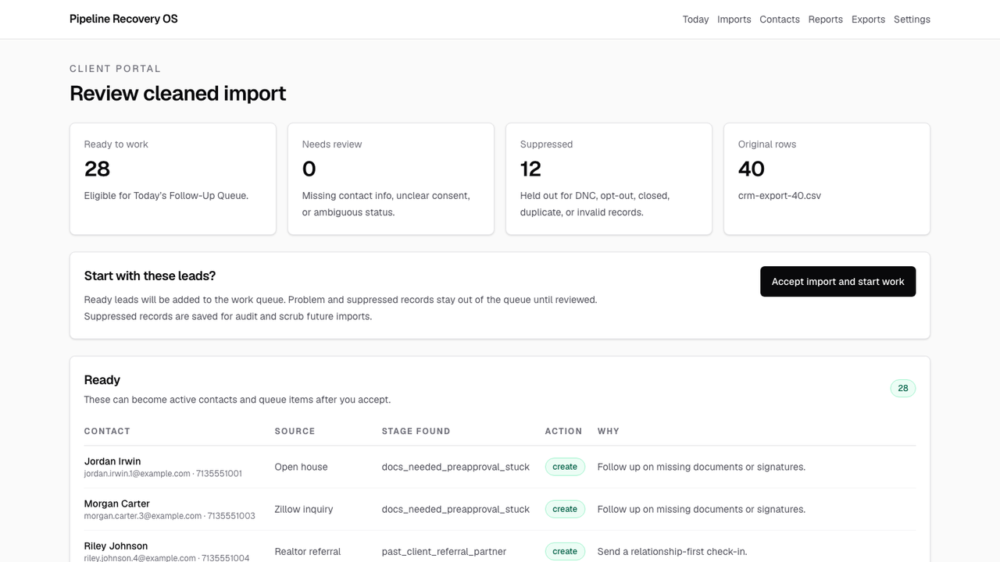
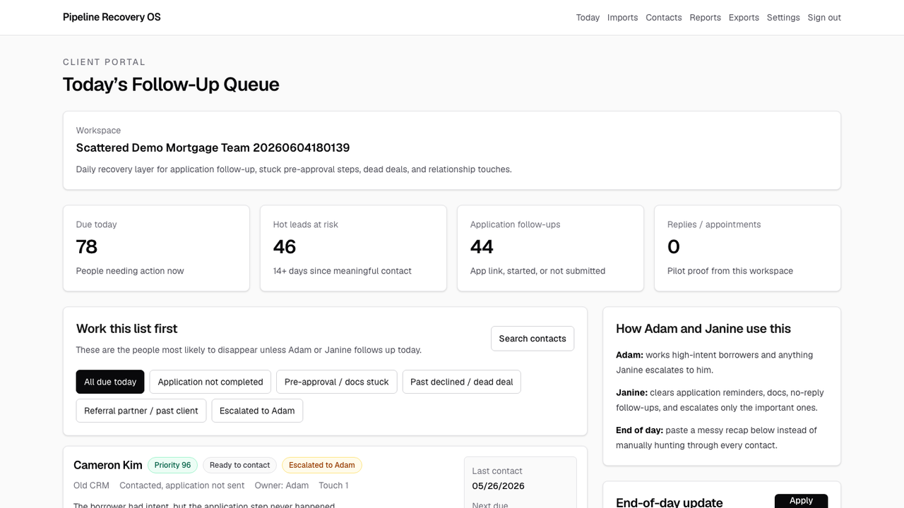

How to use Pipeline Recovery OS with the demo import files
This document teaches a salesperson how to create a test account, upload the same scattered demo files, watch the production system clean them, and understand the daily follow-up workflow well enough to explain it to a prospect.
What this software is for
Pipeline Recovery OS is for sales teams that already have leads, but those leads are scattered across old CRM exports, spreadsheets, Facebook messages, text notes, open-house forms, referral lists, and memory.
The simple idea: if a person once raised their hand, asked about buying, selling, borrowing, refinancing, or getting help, they should not disappear forever just because the team got busy.
Simple analogy
Think of the product like a lost-and-found desk for sales leads. The customer brings a messy box of old notes, spreadsheets, and names. The system sorts the box into piles: safe to follow up, needs review, do not contact, duplicate, and updated history.
It finds recoverable people
Old buyers, old sellers, borrowers who never finished an application, past clients, referral partners, and dead deals that might be alive again.
It creates a daily queue
The user does not stare at a spreadsheet. They open Today's Follow-Up Queue and work the list in order.
It does not mass-send
V1 creates drafts and queues. A human still reviews, copies, sends, and records what happened.
The sales problem in plain English
A loan officer, real estate agent, broker, or local sales rep may be very good at selling when they are actually talking to someone. The leak happens before that. Leads arrive from many channels, a few messages happen, and then the person disappears from attention.
| What happens in real life | Why money gets lost | How Pipeline Recovery OS helps |
|---|---|---|
| A Facebook lead asks a question and gets one reply. | If they do not answer fast, the team forgets them. | The lead comes back into a follow-up cadence instead of disappearing. |
| A borrower gets an application link but never completes it. | The loan officer may not remember to follow up after 14 days. | The system flags "application sent, not started" or "application started, not submitted." |
| A buyer or seller was not ready three months ago. | They may be ready now, but nobody checks back. | The system creates a human-approved re-entry message. |
| Someone closed, opted out, or should not be contacted. | Messaging them creates trust and compliance risk. | Exclusion files scrub those people before they enter the work queue. |
Production app and demo files
Use the production app
Open this URL in a browser:
https://lead-recovery-os.vercel.app
For a new test account, go straight to:
https://lead-recovery-os.vercel.app/signup
Use synthetic demo data only
The files in this tutorial are fake and safe for practice. Do not upload a real prospect's customer data unless Mark has explicitly approved that account and use case.
Demo data folder
Use this folder when practicing:
~/lead-recovery-os/demo-import-data/pipeline-recovery-os-demo
If this is sent as a zip package, keep the folder structure intact so the files stay easy to find.
What each demo file represents
| File | What it pretends to be | Import type to select | Why it matters in the pitch |
|---|---|---|---|
| raw-exclusions-dnc-closed.txt | A messy list of people who should not be contacted: opt-outs, closed files, bad contacts, or no-follow-up records. | Do-not-contact | This proves the system can scrub risky records before creating any outreach queue. |
| crm-export-40.csv | An old CRM export with buyers, borrowers, statuses, dates, sources, and notes. | Inactive leads | This is the normal "old database" import most prospects will understand. |
| facebook-open-house-30.csv | Leads from Facebook and open-house activity. | Inactive leads | This shows the system can handle leads outside the main CRM. |
| text-message-notes-20.txt | Messy copied notes that resemble text-message history. | Inactive leads | This shows the system is not limited to clean spreadsheets. |
| seller-valuation-notes-10.txt | Loose notes from homeowners who asked about value or selling. | Inactive leads | This shows the real estate use case in addition to mortgage. |
| journey-update-import-35.csv | A later import with duplicate people, new touchpoints, and some new leads. | Inactive leads | This proves repeat imports can merge into existing journeys instead of creating duplicates. |
Step-by-step account setup
Open the signup page
You should see a page titled Start your recovery queue.Enter an email address
Use an email inbox you can access. The app does not use passwords. It sends a secure magic link.
If you are practicing for sales, use your own email or a dedicated demo email.Open the magic link
Check your email. Click the secure login link. It should return you to the app.
If you are recording a video, pause while opening email so private inbox content is not shown.Fill out workspace setup
Use these values for practice:
Workspace name: Demo Mortgage Recovery Team Business type: Mortgage growth Your role: Broker / team lead Market / location: Houston, TX
Click Continue to import
This creates the workspace and takes you to the first import screen.

Step-by-step import flow
You will repeat the same basic import process several times. The first file is the exclusion file. The rest are lead files.
Go to Import leads
After workspace setup, the app should take you to the import page. Later, you can also use the left navigation and click Imports, then start a new import.
Choose what you are importing
For the first file, select Do-not-contact. For the rest, select Inactive leads.
Keep Upload file selected
Use Upload file for the CSV and TXT demo files.
The app also supports pasted text, but files are easier for this practice run.Click Drop in a lead file and choose the file
Select the correct file from the demo data folder.
Click Clean and review leads
This starts the production import job.
The browser is not doing the heavy work. The Vercel app creates the job; the Railway worker parses and cleans the file; Supabase stores progress.Wait on Cleaning your lead file
Watch the progress screen. It moves through phases like reading, parsing, normalizing, deduping, scrubbing exclusions, and preparing review.
Review the cleaned import
You will see three buckets: Ready to work, Needs review, and Suppressed.
Click Accept import and start work
This commits safe, ready rows into the workspace queue. Suppressed and problem rows do not become outreach items.
Recommended upload order
| Order | File | What to select | What you should notice |
|---|---|---|---|
| 1 | raw-exclusions-dnc-closed.txt |
Do-not-contact | Everything should be suppressed. This builds the scrub list. |
| 2 | crm-export-40.csv |
Inactive leads | Some records become ready, and some match the exclusion list and are suppressed. |
| 3 | facebook-open-house-30.csv |
Inactive leads | The app handles a different source without needing a CRM integration. |
| 4 | text-message-notes-20.txt |
Inactive leads | Messy notes can still turn into structured queue items. |
| 5 | seller-valuation-notes-10.txt |
Inactive leads | Seller/realtor-style notes work too. |
| 6 | journey-update-import-35.csv |
Inactive leads | Duplicate people should merge into existing journeys instead of creating duplicate contacts. |
What the review buckets mean
Every import pauses on this review screen. This is the safety gate. The user checks the buckets first, then accepts only the clean import results into the working queue.

Ready to work
These records have enough contact information and are safe enough to become active follow-up items after you accept.
Needs review
These are not safe to queue automatically. Maybe the contact info is missing, consent is unclear, or the status is too ambiguous.
Suppressed
These are held out because they are do-not-contact, opted out, closed, bad contact, duplicate, or otherwise unsafe to message.
Plain-English sales explanation
"The system does not blindly dump every row into the queue. It stages the import first. The customer gets to see what is safe, what needs human review, and what should never be contacted."
After importing: how to use Today's Follow-Up Queue
After you accept the imports, go to Today or Dashboard. The main page is called Today's Follow-Up Queue. This is the daily workbench.

Look at the summary cards
The top cards show how much work is due today, hot leads at risk, application follow-ups, and replies or appointments.
Use the filters
Filters help the user focus: application follow-ups, docs stuck, past declined/dead deal, referral/past client, and needs Adam.
Open or read a lead card
Each card shows the person, source, stage, owner, last contact date, why they are in the queue, next step, and a draft message.
Copy the suggested message
Click Copy message, then paste it wherever the salesperson actually communicates: email, SMS, CRM, Facebook, or another system.
V1 does not send messages directly. This is intentional and safer for early pilots.Record what happened
After outreach, click the outcome button that matches reality: Outreach done, No reply, They replied, App submitted, Call booked, Escalate to Adam, Follow up in 3 days, Pause 14 days, or Opt out / DNC.
What each outcome button means
Outcome buttons are how the user updates the system without manually editing a CRM record. After they copy and send a message in their normal channel, they click the button that matches what happened.
| Button | Use it when | What it does |
|---|---|---|
| Copy message | You want to use the suggested draft in email, SMS, Facebook, or another tool. | Copies the text. It does not send anything. |
| Outreach done | You called, texted, emailed, or otherwise reached out. | Records a touch and schedules the next follow-up. |
| No reply | You reached out and nobody answered. | Moves the person to the next cadence step so they come back later. |
| They replied | The person responded. | Stops the no-response cadence and keeps the opportunity active. |
| App submitted | A borrower completed the application. | Moves them out of recovery follow-up and into the active process. |
| Call booked | A consult, review call, or appointment is scheduled. | Marks a real recovered conversation. |
| Escalate to Adam | The assistant cannot resolve it and the loan officer needs to personally handle the lead. | Flags it for Adam or the primary salesperson. |
| Follow up in 3 days | The timing is not right today, but it should come back soon. | Snoozes the lead for three days. |
| Pause 14 days | The person is not ready, but should not be thrown away. | Moves the next due date out two weeks. |
| Opt out / DNC | They opted out, consent is bad, or they should not be contacted. | Suppresses the person from future outreach queues. |
End-of-day update box
The end-of-day box is for people who do not want to click through every contact one at a time. They can type a messy recap, and the system tries to match names to known contacts and update outcomes.
Example to paste: "Drew Foster did not respond after I sent the app link. Jordan Irwin needs Adam to call tomorrow. Skyler Lopez booked a call for Monday. Unknown Borrower asked about a loan but I cannot match them."
Find End-of-day update on the dashboard
It appears on the right side of Today's Follow-Up Queue on desktop.
Paste or type a recap
Use normal human language. It does not have to be perfect.
Click Apply updates
The system updates matched contacts and logs anything it cannot match.
How to explain this during a sales conversation
"Most teams do not have a lead generation problem first. They have a lead leakage problem. People raise their hand, ask a question, get an app link, attend an open house, or talk to the team once, then fall out of memory. Pipeline Recovery OS imports the messy history, scrubs out records that should not be contacted, merges duplicate touchpoints into a single journey, and gives the team a daily list of who to follow up with, why now, and what to say. It is not a mass texting tool. It is a human-approved recovery queue."
For loan officers
Focus on application links sent but not started, applications started but not submitted, docs stuck, pre-approval declines, and dead files that could be ready later.
For real estate agents
Focus on old buyers, old sellers, open-house contacts, home value check-ins, past clients, and referral asks.
For brokers or owners
Focus on visibility: leads worked, replies, appointments, stale leads recovered, assistant productivity, and pipeline leakage.
Practice checklist
Before presenting this to a prospect, run through this checklist at least once.
I can explain what Pipeline Recovery OS does in one sentence.
I created a test account through the production signup flow.
I created a mortgage-growth workspace.
I uploaded the exclusion file first.
I uploaded all five lead/update files after that.
I understand Ready, Needs review, and Suppressed.
I accepted imports and saw Today's Follow-Up Queue populate.
I copied a message and understand that the app does not send messages directly.
I clicked an outcome button and understand how follow-up gets scheduled.
I tested the end-of-day update box.
Common questions
| Question | Answer |
|---|---|
| Does it replace the CRM? | No. It is a recovery layer. It helps find and work stale or scattered leads that the CRM workflow failed to keep alive. |
| Does it send texts or emails? | No, not in v1. It creates human-approved drafts and a work queue. The user copies the message into their normal channel. |
| What happens to people who should not be contacted? | They are suppressed and kept out of drafts and queues. |
| What if the same person appears in multiple files? | The system tries to merge the journey instead of creating duplicate contacts. |
| What if data is messy? | That is the point. The worker handles CSV, TXT, pasted notes, and other common messy formats. Ambiguous rows can be staged for review. |
| Why does the import take time? | It is reading, parsing, normalizing, deduping, scrubbing exclusions, reconstructing journeys, and preparing a review queue. |
| What should the user do every day? | Open Today's Follow-Up Queue, work the top leads, copy/send messages manually, click outcome buttons, and optionally paste an end-of-day recap. |
Technical proof points, without getting too technical
Vercel
The customer-facing app, signup flow, dashboard, imports UI, and review screens run on Vercel.
Railway
The heavy import worker runs in a Railway production container so large, messy files do not block the web app.
Supabase
Auth, workspaces, import status, contacts, opportunities, and activity history live in Supabase.
Latest production QA proof: qa/reports/selfserve-20260604180139/REPORT.md